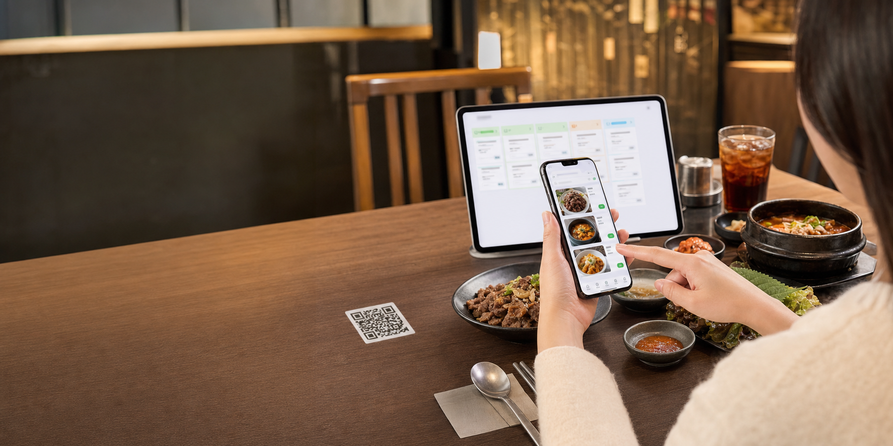

고깃집 온기 · 5번 테이블

Customer Web Front-end
손님용 QR 웹 메뉴판
URL 파라미터의 매장과 테이블을 인식하고, 메뉴 선택부터 주문 전송까지 한 화면에서 처리합니다.
Owner Dashboard
사장님 실시간 주문 보드
새 주문은 대기열에 들어오고, 클릭 한 번으로 조리중과 완료 상태로 넘길 수 있습니다.
0
대기
0
조리중
0
완료
0원
오늘 주문액
Menu CMS
메뉴 및 품절 관리
가격과 품절 상태는 손님 메뉴판에 즉시 반영됩니다.
Table QR Generator
매장 QR 코드 생성기
매장 ID와 테이블 번호만 입력하면 손님 메뉴판으로 연결되는 QR 이미지를 만들 수 있습니다.
Research Summary
문서 기반 실행 전략
리서치 보고서의 벤치마킹 포인트를 제품 화면과 영업 메시지로 압축했습니다.
웹 접근성
네이버 주문처럼 앱 설치 없이 기본 카메라 스캔만으로 메뉴판에 진입합니다.
간단한 관리자 화면
토스 오더와 핀메뉴의 강점처럼 사장님은 브라우저만 켜두고 주문을 받습니다.
하드웨어 비용 0원
거치형 태블릿 대신 종이 QR과 개인 스마트폰을 활용해 초기 장벽을 낮춥니다.
Front-end
React 또는 Vue + Tailwind CSS
Database
Firebase Firestore onSnapshot 실시간 동기화
Backend
Firebase Functions 기반 서버리스 로직
Hosting
Firebase Hosting, Vercel, Cloudflare Pages